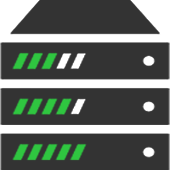

This lightweight script has four exclusive specifications:
Determines the background color without using CSS
Determines the text color without using CSS
Determines the background opacity which was imposible before
Compatible with JQuery and javascript
Installation and using of this script is so easy, Click on the following button for the tutorial and you can test this script at the end of this page.

Browsers generate code
With CCHTML (ColorClass) your script will be more lightweight. Styles will make with the user system.Write less code
Sometimes it's possible to do a 10 line CSS code with only just 3 characters. Do you know with which ones?This is with yourself
This script is enough strange that certainly you will discover things that even we do not know!
Rapid Test Panel
here is result of test.
change background color:
change text color:
change background opacity:
change text opacity:
change image filter:
b%05
b%1
b%15
b%2
b%25
b%3
b%35
b%4
b%45
b%5
b%55
b%6
b%65
b%7
b%75
b%8
b%85
b%9
b%95
b%100